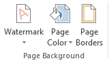

المكونات الرئيسية
العلامة المائية
عنصر تصميمي شفاف يُستخدم لحماية المستندات أو إضافة شعار الشركة، يتم وضعه خلف المحتوى الرئيسي دون التأثير على قراءته.
حدود ملونة
إطارات تصميمية حول الصفحة تضيف لمسة جمالية وتحدد مساحة العمل بشكل واضح، تتوفر بأنماط وألوان متعددة.
خلفية الصفحة
تنسيقات متكاملة للخلفيات تشمل الألوان، التدرجات، الصور والأنماط التي تعزز المظهر العام للمستند.
أنواع خلفيات الصفحات

خلفية متدرجة لونيًا
علامة مائية نصية

خلفية صورة
حدود ملونة مخصصة
كيفية إضافة خلفية مخصصة
اختر نوع الخلفية
حدد ما إذا كنت تريد استخدام لون خالص، تدرج لوني، صورة أو نمط معين كخلفية لصفحاتك.
اضبط الإعدادات
قم بتخصيص الشفافية، الموضع، التكرار والتناسب حسب احتياجاتك التصميمية.
أضف العلامة المائية
اختر نص أو صورة العلامة المائية وحدد مستوى الشفافية والموقع المناسب لها.
تطبيق الحدود
اختر لون ونمط الحدود واضبط سماكتها حسب الرغبة لإكمال المظهر النهائي.
حفظ والمعاينة
احفظ التغييرات واطلع على المعاينة النهائية قبل تطبيقها على المستند كامل.